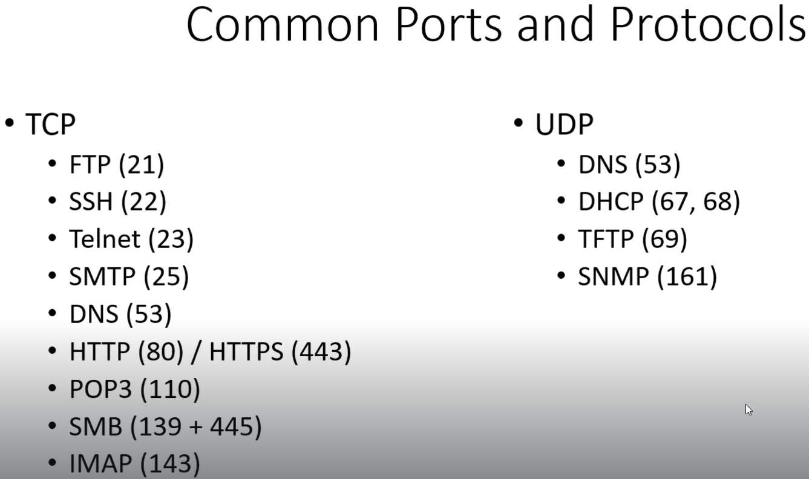

cmd:ifconfig
o/p:
Ip address are layer 3(network layer)
inet=ipv4
dotted decimal
4 oectets(8 bits):
total length: 32 bits
192.168.x.x :private ip
inet6=ipv6
hexadecimal:
total length:128 bits
-----------------------------------------------------
MAC:Media Access Control
o/p:ether
MAC:physical address
layer 2
related to switching
length:48 bits
first 24 bits: OUI(Organisationally Unique Identifier)
Used to communicate when we use switches
NIC(Network Interface Cards) have MAC address
---------------------------------------------------------
TCP UDP layer 4
TCP(Transmission Control Protocol)
Connection oriented protocol
high reliability
http ftp ssh utilise TCP
Web services
3 way handshake
1)Send SYN
2)Receive SYN+ACK
3)Send ACK
UDP(User Datagram Protocol)
Connectionless protocol
VOIP, Streaming Service, DNS
----------------------------------------------------
Commom Ports and Protocols

DNS is both TCP and UDP
DHCP : DORA: like getting job offer
--------------------------------------------------------------------------
OSI Model(Open System Interconnection)
1) Physical Layer:cables ,hubs
2) Data Link Layer: has 2 sub layers- i)MAC(Medium Access Control) layer
- ii)Logic Link Layer
MAC address
switching
3) Network Layer
IP address routing
4) Transport Layer
TCP
UDP
5) Session Layer
session management
6) Presentation Layer
jpeg,mp4,character encoding UTF-8
7) Application Layer
HTTP, SMTP
When troubleshooting: start from layer 1
Sending data: layer 7 - to - layer 1
Receving data: layer 1 - to - layer 7
-------------------------------------------------------
Subnetting
AND operation of Subnet mask and Given IP gives network IP(AND operation on the bits)
First IP is Network IP
Last IP is for Directed Broadcast
255.255.255.255 is for limited broadcast(Broadcasting within the netowork)
CIDR(Classless InterDomain Routing)
/24:(WAK 24)means 24 bits belong to network ID(NID) and 8 bits belong to Host ID(HID)
Subtract 2 from number of hosts in a network to get actual number of hosts since first and last IP not used for hosts
Subnetting: some bits from HID become NID bits